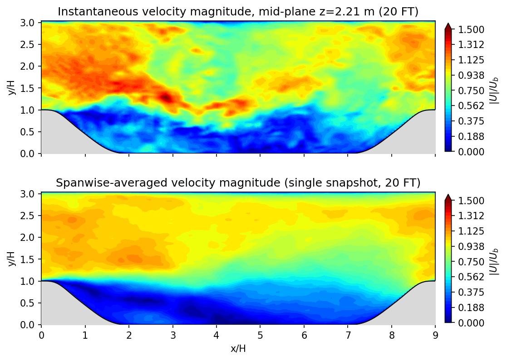
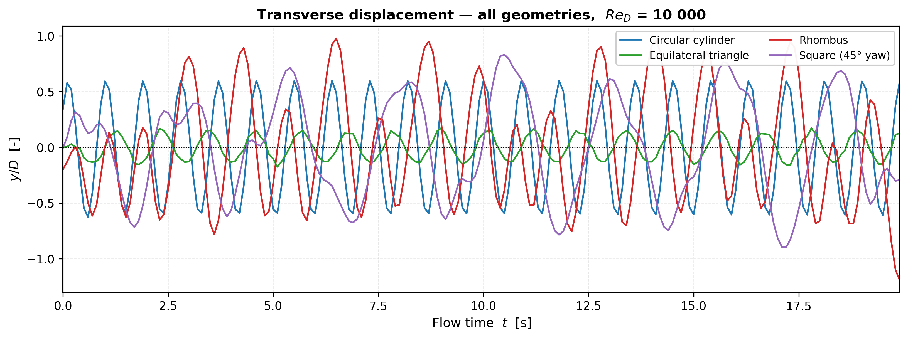
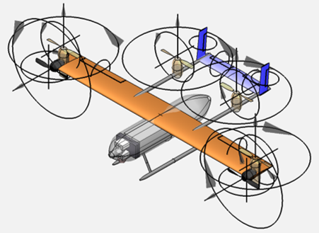

Making airflow visible, predictable and a little beautiful.
I'm an MSc student in Aeronautical Engineering at Linköping University (fluid mechanics track), specialising in aerodynamics, CFD and propulsion. I run LES and RANS on HPC clusters, validate against DNS and reference data, and design aircraft on paper before anyone cuts metal.
I started with a BE in Aeronautical Engineering in Coimbatore, did CFD and CAE internships, co-authored an AIAA paper on nozzle design, then spent three years managing production at a garments firm, which taught me quality, deadlines and how to coordinate people. Now I'm back full-time in the thing I love: fluids.
Open to thesis projects and graduate roles in CFD, turbomachinery and thermal systems in Sweden.
English · full professionalTamil · nativeGerman · A1Swedish · learning
03 — Education & Experience
MSc Aeronautical Engineering
Linköping University, Sweden
Aerodynamics, Computational Fluid Dynamics, Aircraft Conceptual Design, Computational Aerodynamics, Finite Element Methods, Flight Mechanics, Gas Turbines.
Production Manager
Sree Murugan Garments, India
Oversaw daily production, raw material sourcing, quality inspections and cross-department coordination to keep manufacturing efficient and on standard.
CFD Intern & Trainee
Vyadh Aerospace Pvt. Ltd.
Meshing, solver setup, aerodynamic simulations and performance analysis over a 3-month CFD internship.
CAE Engineer Intern
Simulation Lab Pvt. Ltd.
Contributed to aerodynamic product development through simulation and supported a patent application on wing flap efficiency enhancement.
BE Aeronautical Engineering
Kumaraguru College of Technology, Coimbatore
Bachelor thesis on a devil-ray inspired unmanned amphibious rescue vehicle, studied with CFD and FEA.
04 — Selected work

01
Large Eddy Simulation of Periodic Hill Flow
LES at ReH = 10,595 in ANSYS Fluent on the Tetralith cluster via SLURM. Debugged journal-file workflows, extracted benchmark data from Krank (2018), Fröhlich (2005) and Breuer (2009), and built MATLAB scripts for TKE profile comparison.
LESFluentHPCMATLAB

02
Vortex-Induced Vibration of Bluff Bodies
2D URANS (SST k-ω) of a cylinder, triangle, rhombus and 45° square at ReD = 10,000, with iterative POD analysis in MATLAB comparing LES and URANS wakes.
URANSSST k-ωPODFSI

03
FALCON v3: VTOL Delivery Drone
Tilt-rotor, twin-boom H-tail concept for Bussgods: 160 km round trip in northern Sweden with a 20 kg payload. Range and endurance, CG sweep, specific excess power, payload-range, cold-weather battery derating and propulsion selection.
Conceptual designMATLABVTOL
04
Cybertruck External Aerodynamics
CFD of a Tesla Cybertruck geometry in ANSYS Fluent, verified and validated against SBES reference data with a drag and lift coefficient comparison and percentage errors.
External aeroFluentV&V
05
Two-Element Rear Wing Optimisation
CFD-driven optimisation using design of experiments, response-surface modelling and multi-objective genetic algorithms (MOGA), plus a Fowler flap sweep.
DoESurrogateMOGAMotorsport aero
06
A360 Narrow-Body Aircraft Family
Conceptual design of a 244-seat baseline and a 224-seat variant for a Delhi–London Heathrow mission: payload-range, specific excess power, drag build-up, static margin and engine scaling.
Aircraft designPayload-rangeSEP
07
Surveillance UAV Sizing in Hopsan
System-level Hopsan model of a 14 kg payload, 110 km mission UAV with a MATLAB sizing script converging on MTOW ≈ 26.6 kg, a 1.84 m² wing and a 22.4 Ah battery at 50 V.
HopsanMATLABSizing
08
MRI-Compatible Water Tunnel
12-credit CFD project developing a water tunnel for MRI flow studies: stenosis, an FDA blood-pump benchmark and porous-media phantoms.
CFDBiomedical flowPhantom design
09
Devil-Ray Amphibious Rescue Vehicle
Bachelor thesis: a nature-inspired unmanned amphibious vehicle for rescue, evaluated with CFD and FEA for aerodynamic, hydrodynamic and structural performance.
CFDFEABio-inspired
Publication
“Conceptual Design and Contour Optimization of Altitude Compensation Nozzles for SSTO Vehicle”
AIAA Propulsion and Energy Forum (2020) · AIAA 2020-3922